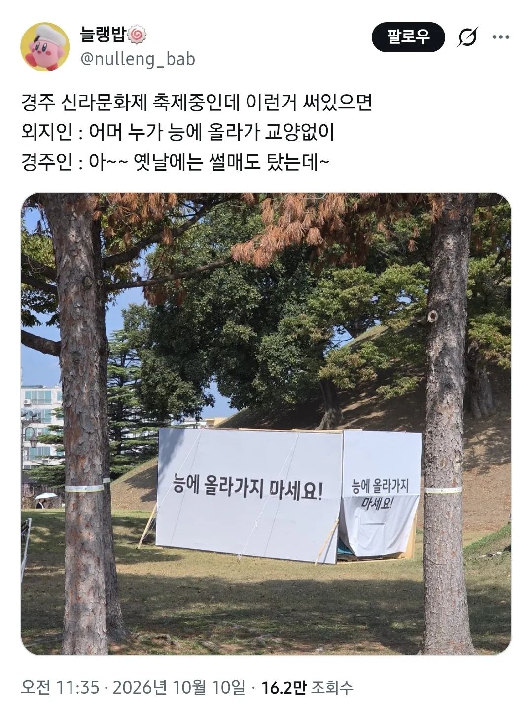
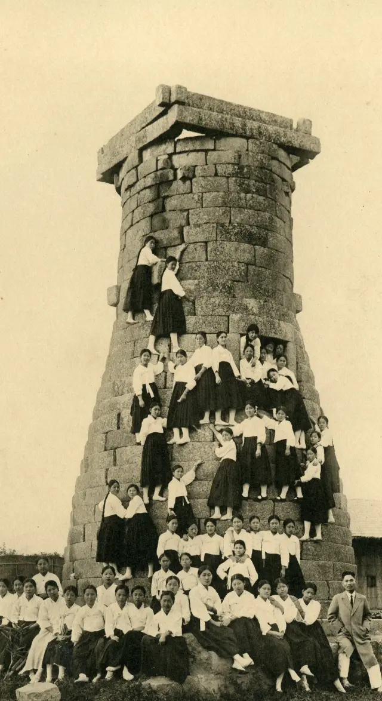

옛날 여고 수학여행 사진


옛날 여고 수학여행 사진
낭만 = 야만
동의어를 왜...
어째서..!!
태국 갔을때 우리한테는 설명해주고(왕이 게이였다 그래서 후손이 없음 블리블라) 한쪽에서는 무너진 벽에 공구리 치면서 애들이 벽에 축구공질 하는거 혼내고 있었음 ㅋㅋ
저기서 고삐리들 밤에 야장까고 술마시고 담배피고 그랫다며 ㅋㅋ
역시 2특수부대원
2전차아니었나?ㅋ
3명이서 1전차던가
그땐 그랬지로 모든것이 방어되는....
중간 이상 올라간건 좀 대단한데 ㅋㅋㅋㅋ
들어가있는 거는 또 뭐야 ㅋㅋㅋㅋㅋㅋㅋㅋㅋㅋㅋㅋㅋㅋㅋㅋㅋㅋㅋㅋㅋㅋㅋㅋㅋㅋㅋㅋㅋㅋ
저시절에도 여고생은 강했구나
야생 ㅋㅋ
저건 문화재
옛날에는 불국사 석굴암 뒤쪽으로도 들어갈 수 있었다는 사실
존나 높게올라갔네ㅋ
첨성대 너무 옛날에 가서 그런가 저렇게 컸어??
산양여고냐!!!!!
클라이머 아니냐 저정도는 ㅋㅋㅋ
현지인: 가 능
젤 높이 올라간 저 분은 좀 위험한 높이까지 올라간것 같은데 ㅋㅋㅋ
생각해보니 선산이 포대 썰매 타기 딱 좋긴 했음
첨성대를 피라미드처럼 ㅋㅋㅋ
보도블럭 툭 튀어나온거 걸려 넘어지는 현대인으로서는 상상하기 힘든 강인함.. ㅋㅋㅋ
아니씹 저거 진짜냐 ㅋㅋㅋ 아무리봐도 ai인데 내부까지 알뜰하게 채웟네 ㅋㅋ
능에 올라가지 말라능
능에 올라가 썰매탄건 맞음
첨성대 사진은 AI 임
나도 저기서 썰매탓는데 ㅋㅋㅋ 황리단길 예전엔 그냥 주택가라 초등학교있고
진짜 오랜만에 경복궁갔는데 근정전 문 닫아놓고 돌계단도못올라가게 막혀있더라
여고라서 첨성대 중간까지만 올라갔지 남고 사진 찾아보면 산양 마냥 벽에 몇명씩 붙어있고 지붕에 수십명 올라가있음
첨성대 말고 사진에 여자가 많은 걸 보니....다보탑이라 하자
낭만 VS 야만
ㅋㅋㅋㅋㅋㅋㅋㅋ